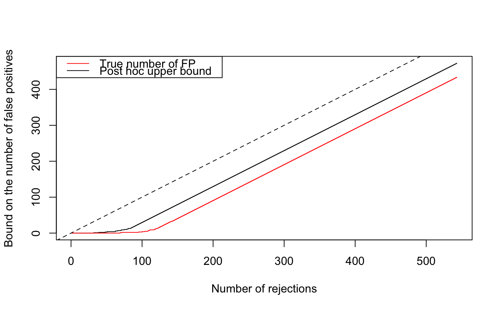

calibrateJER.RdCalibration of of JER thresholds using one or two-sample tests
calibrateJER(X, B, alpha, alternative = c("two.sided", "less", "greater"), rowTestFUN = rowWelchTests, refFamily = c("Simes", "kFWER", "Beta"), maxStepsDown = 10L, K = nrow(X), verbose = TRUE)
| X | A matrix of \(m\) variables (hypotheses) by \(n\) observations. The column names of X should be "0" for the first sample and "1" for the second sample. |
|---|---|
| B | A numeric value, the number of permutations to be performed |
| alpha | Target JER level |
| alternative | A character string specifying the alternative hypothesis. Must be one of "two.sided" (default), "greater" or "less". |
| rowTestFUN | A (vectorized) test function. Defaults to
|
| refFamily | A character value which can be
|
| maxStepsDown | Maximum number of steps down to be performed. |
| K | For JER control over |
| verbose | A boolean value: should extra info be printed? |
A list with elements:
A numeric vector of m test statistics
A numeric vector of length K, such that the estimated
probability that there exists an index \(k\) between 1 and \(K\) such
that the \(k\)-th maximum of the test statistics of is greater than
\(thr[k]\), is less than \(\alpha\)
A numeric value, the result of the calibration
See testByRandomization for a description of the tests performed for calibration.
m <- 543 pi0 <- 0.8 sim <- gaussianSamples(m = m, rho = 0.2, n = 100, pi0 = pi0, SNR = 3, prob = 0.5) X <- sim$X cal <- calibrateJER(X, B = 1e3, alpha = 0.2, refFamily="Simes", alt="greater") cal$lambda # > alpha (whp) if rho > 0#> 20% #> 0.3042881# Application 1: confidence envelope # ie upper confidence bound for the number of false positives # among the k most significant items for all k stat <- cal$stat o <- order(stat, decreasing = TRUE) R <- seq_along(stat) Vbar <- curveMaxFP(stat[o], cal$thr) # True number of false positives among the most significant items: H0 <- which(sim$H == 0) V <- cumsum(o %in% H0) plot(R, Vbar, t = 's', xlab = "Number of rejections", ylab = "Bound on the number of false positives")# Application 2a: bound on the number of false positives in one or # more user-defined selections sel <- stat[o][c(1:10, 35:40)] maxFP(sel, cal$thr)#> [1] 2#> [1] 3# Application 2b: bound on pi0, the proportion of false positives in H sel <- stat[o] maxFP(sel, cal$thr)/m#> [1] 0.8710866pi0#> [1] 0.8